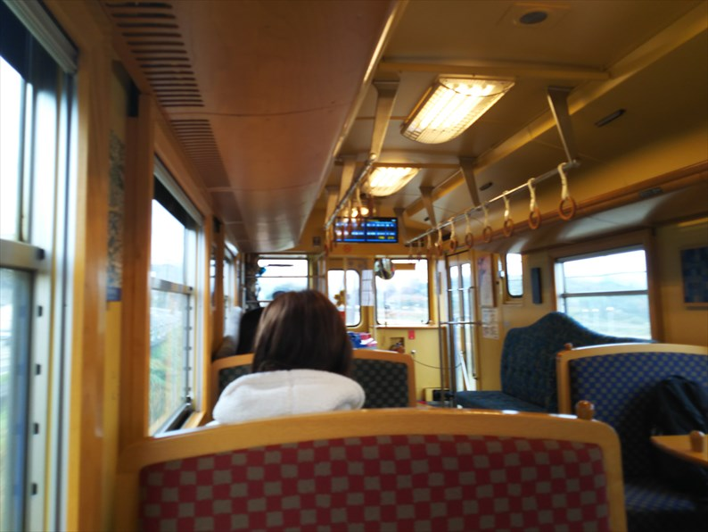
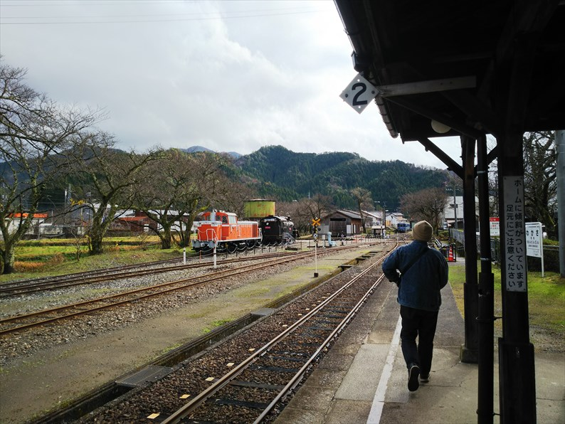

2023（R5） 12月15〜16日 はわい温泉
いよいよ国鉄型の特急車両の最後の生き残り、やくもも来春から新型車両への置き換えが始まるということで、
早いですがお名残り乗車と行きますか。
もちろん前後の行程は青春１８ですよね。
相生からは、こちらもそろそろ置き換えかもという
国鉄色の１１５系がお出迎えです。
今回はたまたま国鉄色編成に当たりました。ラッキ
ーです。
岡山駅に到着。特急色のやくもと並びました。
ホームに来たら、お客さんがえらい並んでるので、
自由席ヤバいやん、と思いましたが、次の普通を待
つ列でした。
やくもは自由席もガラガラで発車です。
それにしても車内が寒い。そんなに暖房費用ケチら
んでもええやろ。車掌に言うて温度上げてもらいま
した。
ちなみに車内の到着のアナウンスも、昔のオルゴールでした。
今回は米子で降ります。

米子からも国鉄色！令和５年にして、相生からずっと国鉄色って、すごない？
伯耆大山では国鉄色のＥＦ６４と併走。ん〜、いい
っすね。
暖房の効いたＢＯＸ席を独り占めして海を見ながら
のんびり移動って、ほんまいいっすよね。
山陰本線で現存する一番古い駅舎の御来屋駅で長めの停車があったので降りてみました。
倉吉駅に到着。
バスで目的の温泉に向います。
到着しました。
今回は、行ったことのなかったハワイ、いや羽合温
泉に宿泊します。
宝塚って、同級生とか先生とか、このあたりがふる
さとやったり出身やったりする人が何人かいて、
「ハワイ行ってきて〜ん」
「エエーッ！」
「鳥取の」
みたいなノリをよく聞いてました。
全然賑わってない、寂しい温泉でした。
部屋から東郷池が見える、というのがウリの部屋で
したが、手前の駐車場のほうが目につきました。

温泉はしっかりしてました。ちょっと熱かったかな。

さて翌日。
さすがに今日は新型車両です。まずは鳥取に向かい
ます。
宝木駅で上下２本のすれ違い待ちで長時間停車。時間に余裕があるときは、こういうのがいいっすよね。
鳥取到着。
鳥取からは若桜鉄道の車両がお出迎え。
鳥取といえば、寅さんの別れのシーンが思い出され
ます。
向こうのホームからは１８１系の特急が出発していきます。

若桜行の列車は観光客も多く、賑わってました。
若桜駅に到着です。

久々の若桜駅。車で連れてきてもらった時以来です。

駅前を散策しましたが、いい感じの町並みが残って
ます。
駅はちょっとオシャレに変わってました。
せっかくやし、カフェでゆっくりコーヒーでもと思
って奮発したのに、出てくるのが遅い！
田舎もんて、なんで客が時間に余裕があるって思い
込むんやろ。っちゅーか、客のことなんて考えてな
いんやろな。駅舎のカフェやねんから、列車の出発
時間ぐらい意識せぇよ。
若桜鉄道、保存車両がいくつかあって、途中の駅で
は模型でほしい貨物の車掌車も保存されてます。

安部駅を出発。
ここでは、１９９１年の「男はつらいよ 寅次郎の
告白」で寅さんが柴又に電話したあと、列車に乗り
込んで行きました。
これは浦さんの投稿にもあった隼駅の保存車両です
ね。
郡家駅で、因美線に乗り換えます。
高校の時、夜行のだいせんで早朝の鳥取について、
未乗だった若桜線に乗りに来た時以来かな。
智頭急行の車両がやって来ました。あれ？因美線てＪＲの車両
走ってないの？
智頭で津山行に乗り換えます。ここから津山までがかなり本数が減ってる区間です。まさか廃止はないと思うけど・・・
この区間も久々に乗りましたが、思ってたよりも山
間を走る、のどかないい路線でした。
美作滝尾駅を出発。ここは１９９５年の男はつらい
よの事実上の最終作「男はつらいよ 紅の花」のオ
ープニングの撮影地ですね。
さて、終点津山の一つ手前、東津山駅で降ります。
ここで姫新線と合流です。帰りは姫新線で帰るので
ここで少し休憩。

駅から５分ぐらい歩くと、ありましたよ！
もちろん、何かわかりますよね。
もっと城下町の由緒ある商店街みたいなとこにあると思ってたんですが、
思ってたのと全然違ってました。
こういうところで育ったんやと思うと、より好感が
持てました。東津山駅も利用してたんかな？
さて、戻るとします。
姫新線は直通列車などとっくに無くなり、ぶつ切り状態です。
佐用で待ち時間がかなりあります。
駅の近くに喫茶店があったので、寄ってみます。
駅の近くに喫茶店があったので、寄ってみます。
いきなりジオラマがあったのでびっくり！
でも、ホコリかぶってました。
店は暖房効いてなく、これやったら暖房の効いた駅
の待合室で缶コーヒー飲んでたらよかったと後悔
佐用からも姫路行はなく、播磨新宮行になります。
播磨新宮で姫路行に乗り換え。あ〜疲れた。